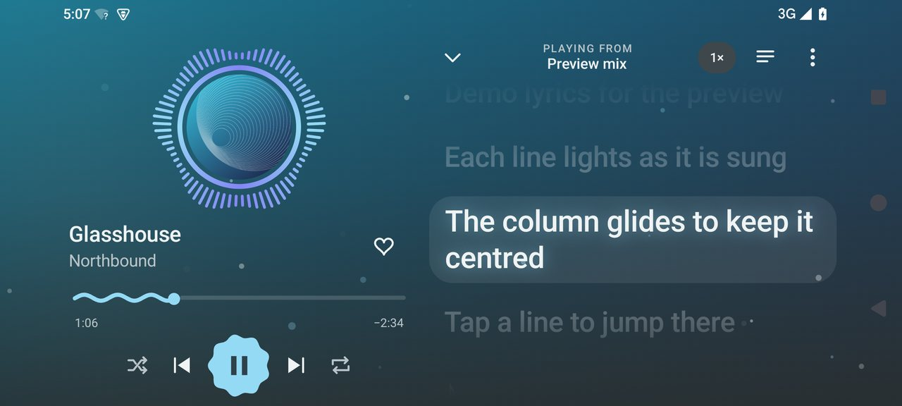
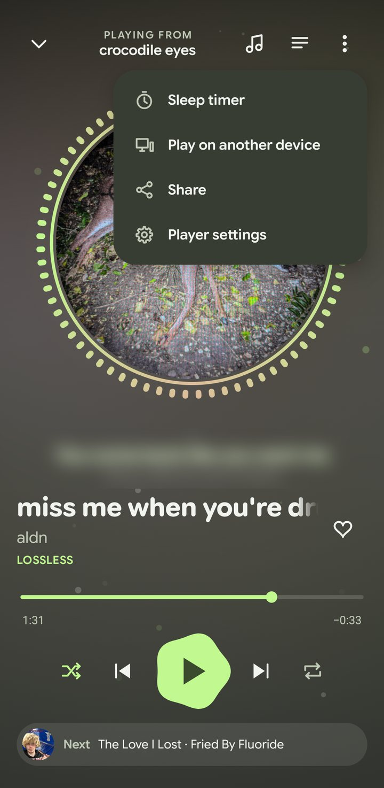
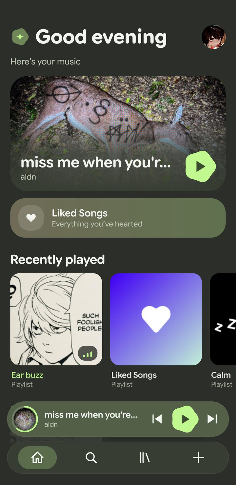

What Spatch changes
Every change below has its own switch in Spatch settings, with finer options behind it. Presets turn the playful extras on or off together, and Copy and Paste move a whole setup between phones.
Targets Spotify 9.2.0.2053 (version code 148387875) on Android 10 or newer.
The player
The player centres on the album cover, tinted by its own colours. Every piece of the player is a setting you can turn on or off.
- Calmer top barSleep timer, play on another device, share and player settings live in one more menu. Pin any of them back to the top bar in settings.
- Shaped cover artPick a circle, scallop, squircle or soft square, circled by a slowly turning scalloped ring.
- Two-tone cover glowMulti-colour covers drive primary and secondary accents across the glow, bars and highlights. The blurred backdrop drifts while music plays and rests with zero wasted frames when paused.
- Wavy progress and sleep timerA seek bar that waves during playback with style, speed, track-change scrub guard and a floating time pill while seeking. An active sleep timer shows a live circular countdown ring with ±5 minute adjustments.
- Hands-on gesturesHold Next or Previous to scrub through a song, tap Previous at 0:00 to restart, tilt the cover under your finger, or hold and spin it like a record to seek.
- Configurable idle fadeDim the chrome after a pause in touch, choosing individually whether the top bar, title, wave, controls or Next pill fade out.
- Immersive full-screen viewDouble-tap the cover for a centred player with title, artist, controls, volume, swipe-to-skip and visualizers (bars, centre, contour or dots, mirrored, smoothed and placed where you like).
- Opt-in landscape playerTurn on “Allow rotation” in settings for a landscape layout with proportionally scaled art and ring stroke.

Lyrics
Open the time-synced lyrics screen for large lines that follow the song without clutter, or keep a compact strip under the cover.
- Bright sung lineThe line being sung lights up on a soft pill in the cover's colour while the rest dim and shrink toward the edges.
- Gliding columnThe column glides to keep the sung line centred. Songs without lyrics simply show none.
- Tap a line to jumpTap any line to jump straight to that moment in the song.
- Lyric strip in the playerAn optional two-line lyric strip sits under the cover and tucks away when singing stops. Set it to one, two or three lines in settings.
- Landscape side panelIn the opt-in landscape player, synced lyrics sit beside the cover, switch to Up next automatically when a song has no lyrics, transition across track changes and toggle with one tap.

Widgets
Spatch replaces Spotify's Now Playing widget in 4×2 and 4×1 sizes, and adds a Quick Settings play/pause tile.
- Square cover, sized to fitThe cover is always square and sized to the widget space, with concentric rounded corners and subtle text shadows so titles stay readable on bright artwork.
- Stacked tall layoutStretch the widget tall and it stacks cleanly: cover, title, controls.
- Morphing play buttonThe scalloped button grows from five lobes to eight when playback starts and settles back on pause.
- Launcher-driven equaliserThe bouncing equaliser animates inside the launcher without waking the app.
- Follows your wallpaperTurn on “Widget follows wallpaper” to take your phone's Material You colours in light or dark.
- Quick Settings tilePlay and pause from Android's Quick Settings shade without opening the app.

Settings
Open the side panel and choose Spatch, or jump straight to Player settings from the player's more menu. Each area has a main switch and a page of finer options.
- Search by nameType what you are looking for and jump straight to that setting.
- PresetsCalm turns the playful extras off together; Everything turns them all on.
- Copy, paste and resetMove your whole setup between phones as text with Copy and Paste, or reset a single page without touching the rest.
- Themes and category shapesPick palettes from miniature app-window cards or extract multi-tone colours from cover art. Category icons sit in cookie, clover or flower shapes that round out when pressed.
- Motion and hapticsBouncy presses in your theme colour, shape bursts on play, hearts, mini player and lists, shared cover flight into detail headers, spinning mini-player cover, jelly switches, gliding segmented pills, springy scrolling rows, wobbling nav pill and per-action haptic switches. Reduce motion keeps everything still.

Sound and library
Audio tools, redrawn screens and cosmetic switches to hide parts of Spotify you never use.
- Opt-in direct audio readRead Spotify's audio stream directly with no microphone permission for mirrored spectrum bars, a radial contour wave and an optional bass-reactive cover pulse.
- 10-band equalizer and AutoEqSwitch between a smooth Gaussian-summed 10-band curve and 10-band vertical faders with relative delta-drag control, live dB badges, AutoEq headphone correction and dynamics.
- Redrawn screens and iconsHome, Search, Library, playlists and the side panel use rounded Material Symbols vectors instead of Encore glyphs, with a floating navigation bar that slides between tabs, supports dragging and can hide while scrolling.
- Home, Library and quick menuLong-press Home for a detached quick menu with contoured borders and hover pills. Home pairs a spin-animated greeting icon, spotlight card and draggable filter pills; Library switches tabs via a sliding capsule without jumping scroll; Search, Create and Library adapt into two-column landscape layouts and cards rise in as lists load.
- Playlist and album headersCached entries load in one pass without jumps, topped by a two-tone wash, scroll parallax, dual-colour cover glow, three spinning shapes that speed up with a cover bounce on tap, and a two-pane landscape layout.
- Hide what you skipCosmetically hide podcasts and audiobooks, individual Home sections, side menu items (Recents, Listening stats, Your plan and more) and the Premium tab on free accounts. Nothing changes on your Spotify account.

Developer
Turn on Developer build in Spatch Manager to add a Developer options page inside Spatch.
- Self testsDozens of on-device checks of Spatch's hooks and drawing.
- Frame monitorLive frame times and slow-frame counts drawn over the app.
- Touch inspectorNames the view under your finger and what paints it.
- Crash record and logsStores the last crash and Spotify's recent warnings, ready to copy.